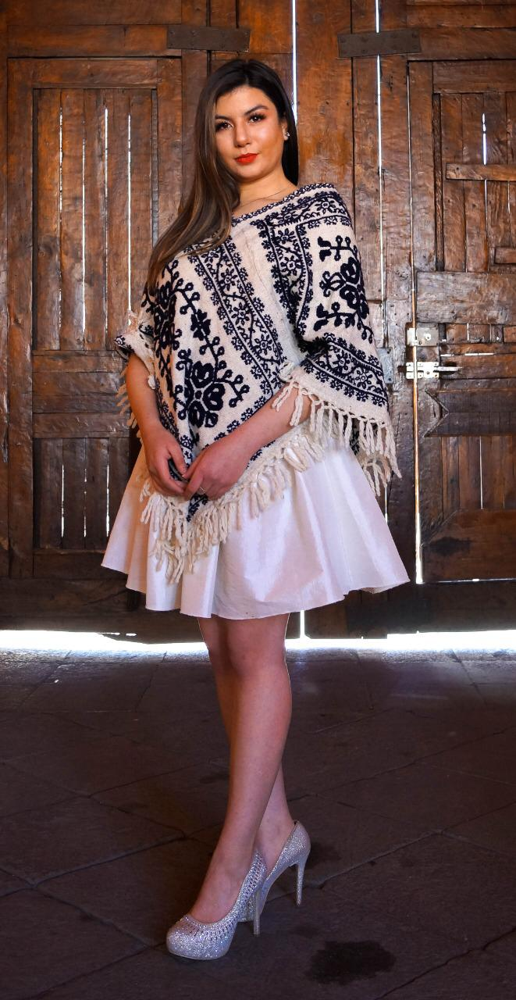
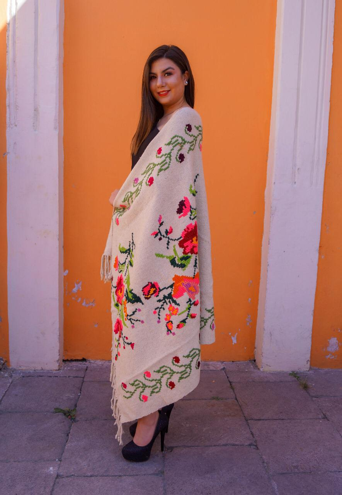
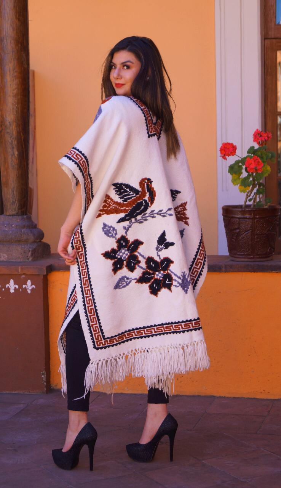
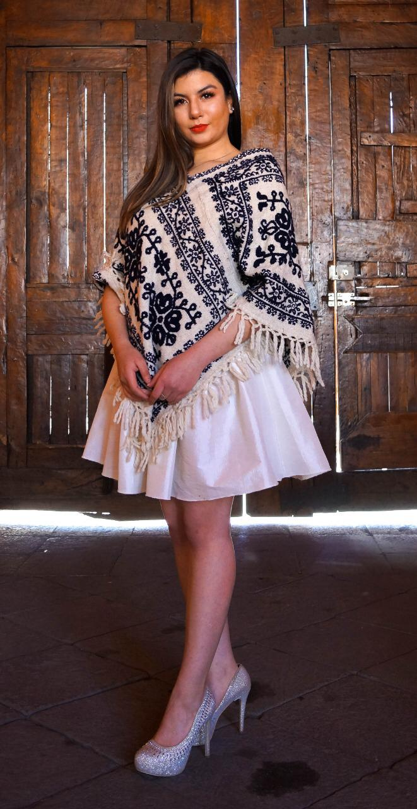
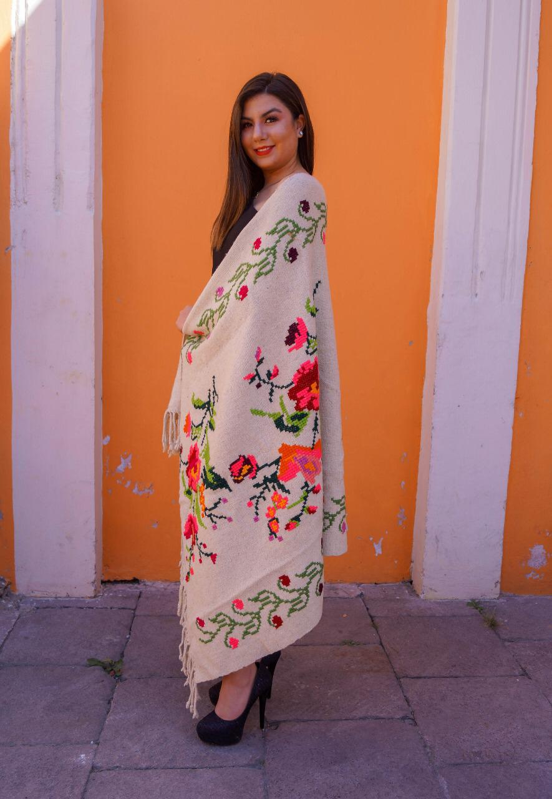
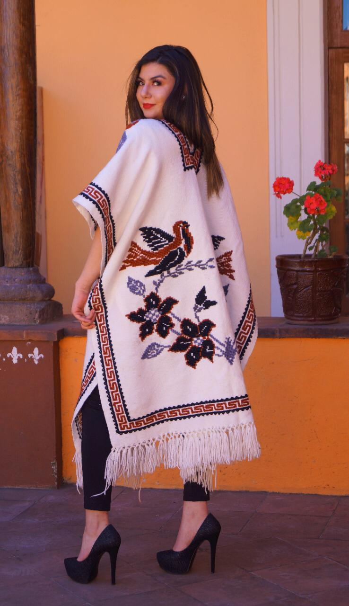

Borado Mazahua
Bordado Mazahua
Loas bordados mazahuas se caracterizan por poseer alrrededor
de la tela una greca llamada careado , y por otra denominada
culebra ,que se borda en distintas convinaciones ,
y enmarcan toda una gama de la iconografia en materia de flora y fauna
,asi como elementos distintivos de la etnia mazahua.
Se producen artesanias como:carpetas ,cojines, cobijas y caminos de mesa;
tambien se hace en la region la llamda "sabanilla", que es una
especie de colcha y el "ceñidor", que es la faja masculina.
La materia prima utilizada se elabora y modifica por los propios artesanos ,desde
cardar e hilar la lana ,hasta teñir y bordar; en su coloracion se utilizan tintes naturales,
como la grana cochinilla , el cempasuchil y la cascara de nuez ,entre otras cosas .
 




